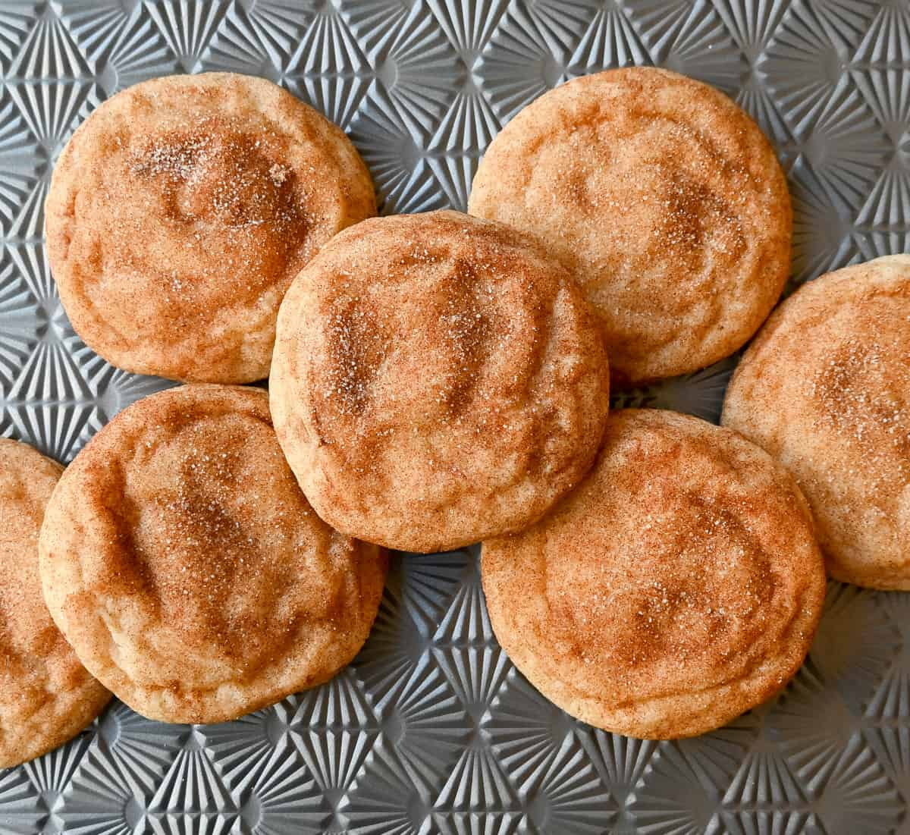

Why These Cookies
These cookies hold a special place in my heart, as they were one of the first ones I made as a child.
They were also the first thing I baked with a special someone of mine and have continued to make it with her.
We've made them for friends and family, particularly my rowing team, as they love them a lot.
